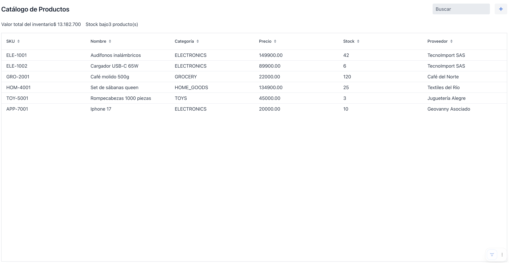

Sesión 6: Backend real con Spring Data JPA¶
Rama: sesion-6
Lo que vas a lograr: reemplazar la lista en memoria por una base H2
real con Spring Data JPA, tropezar con un bug real donde JPA y Signals no
se llevan bien, entender por qué pasa, y resolverlo con un patrón que vas
a repetir en proyectos reales: separar la entidad de persistencia de la
proyección que muestra la UI.
Parte 1: Product se convierte en una entidad JPA¶
Le agregamos anotaciones a Product sin moverla de paquete. Sigue
viviendo en product/, junto al resto de las clases de esta funcionalidad.
package com.baqjug.stockpilot.product;
import jakarta.persistence.Column;
import jakarta.persistence.Entity;
import jakarta.persistence.EnumType;
import jakarta.persistence.Enumerated;
import jakarta.persistence.GeneratedValue;
import jakarta.persistence.GenerationType;
import jakarta.persistence.Id;
import jakarta.persistence.Table;
import java.math.BigDecimal;
@Entity
@Table(name = "product")
public class Product {
@Id
@GeneratedValue(strategy = GenerationType.IDENTITY)
private Long id;
@Column(nullable = false, unique = true)
private String sku;
@Column(nullable = false)
private String name;
@Enumerated(EnumType.STRING)
private ProductCategory category;
@Column(nullable = false)
private BigDecimal unitPrice;
// el resto de los campos, sin cambios
@Override
public boolean equals(Object o) {
if (this == o) {
return true;
}
if (!(o instanceof Product other)) {
return false;
}
return id != null && id.equals(other.id);
}
@Override
public int hashCode() {
return getClass().hashCode();
}
}
Spring al paso: las anotaciones de persistencia
@Entitymarca la clase como una tabla administrada por JPA/Hibernate.@Table(name = "product")fija el nombre de la tabla explícitamente.@Idseñala la llave primaria;@GeneratedValue(strategy = GenerationType.IDENTITY)delega la generación del id a la base de datos (un autoincremental).@Column(nullable = false, unique = true)describe restricciones de la columna: acá, que el SKU no puede repetirse.@Enumerated(EnumType.STRING)guarda el enum como texto ("ELECTRONICS") en vez de como un número de posición, que se rompería si algún día reordenás los valores del enum.
Por qué equals/hashCode por id, y no los que ya tenías
Hasta ahora Product no sobreescribía ni equals ni hashCode: usaba
los de Object, que comparan por identidad de referencia. Para una
entidad JPA, comparar solo por id es la práctica recomendada: dos
objetos Product que representan la misma fila (mismo id) deben
considerarse el mismo producto, aunque sean instancias Java distintas
devueltas por dos consultas separadas, algo que pasa todo el tiempo con
Hibernate. Sin esto, guardar un Product en un Set, o compararlo
después de que Hibernate lo vuelva a cargar, da resultados
inconsistentes. El hashCode() fijo por clase (no por id) es a
propósito: el id de una entidad nueva es null hasta que se guarda, y
el hash de un objeto no puede cambiar mientras vive dentro de una
colección basada en hash. Guárdate esta decisión en la cabeza: en la
Parte 4 va a chocar de frente con Signals.
Lo importante: la clase no cambió de lugar
Esta es la comprobación de la decisión que tomamos en la Sesión 1: la
entidad, el repositorio y el servicio que estás por crear van a vivir
en el mismo paquete product/ que la vista. No hay que saltar a un
paquete backend para tocar la persistencia.
Agrega a pom.xml las dependencias que todavía no tenías (si generaste el
proyecto sin ellas en la Sesión 1):
<dependency>
<groupId>org.springframework.boot</groupId>
<artifactId>spring-boot-starter-data-jpa</artifactId>
</dependency>
<dependency>
<groupId>com.h2database</groupId>
<artifactId>h2</artifactId>
<scope>runtime</scope>
</dependency>
Y en application.properties:
spring.datasource.url=jdbc:h2:mem:stockpilot
spring.jpa.hibernate.ddl-auto=create-drop
spring.jpa.open-in-view=false
spring.h2.console.enabled=true
create-drop + mem: significa que la base se recrea en cada reinicio
mem:stockpilot es una base en memoria: vive mientras el proceso de
Spring Boot está corriendo, y desaparece apenas lo apagas.
create-drop hace que Hibernate borre y vuelva a crear el esquema en
cada arranque. La combinación es perfecta para desarrollo (siempre
arrancas con datos limpios, sembrados por ProductDataSeeder), pero no
es persistencia real: nada de lo que hagas en una sesión de prueba
sobrevive un reinicio, y el seeder vuelve a correr desde cero cada vez.
Sin esta aclaración, un cambio guardado que "desaparece" al reiniciar
parece un bug. El día que necesites que los datos persistan, cambias a
un archivo (jdbc:h2:file:./data/stockpilot) o a una base de verdad
como Postgres.
Entrar a la consola de H2
Con spring.h2.console.enabled=true, corre la app y abre
http://localhost:8080/h2-console en el navegador. En JDBC URL
pega exactamente jdbc:h2:mem:stockpilot (tiene que coincidir con el
de application.properties), deja usuario y contraseña en blanco, y
conéctate. Desde ahí puedes ver las tablas y correr SQL directo contra
lo que sembró ProductDataSeeder.
Por qué apagamos spring.jpa.open-in-view
Spring Boot trae el patrón Open Session In View activado por defecto:
mantiene la sesión de Hibernate abierta durante toda la petición,
incluido el renderizado de la vista. Es cómodo, evita
LazyInitializationException del lado de la UI, pero también esconde
consultas N+1 y deja que la capa de persistencia se filtre hasta donde
no debería. Con open-in-view=false, cualquier acceso a datos
perezosos tiene que pasar explícitamente por ProductService, que es
donde corresponde.
Parte 2: Repositorio y servicio, en el mismo paquete¶
product/ProductRepository.java:
package com.baqjug.stockpilot.product;
import org.springframework.data.jpa.repository.JpaRepository;
public interface ProductRepository extends JpaRepository<Product, Long> {
}
Spring al paso: JpaRepository
Extender JpaRepository<Product, Long> te regala save, findAll,
findById, delete y más, sin escribir una sola implementación. El
segundo parámetro de tipo (Long) es el tipo del id.
product/ProductService.java:
package com.baqjug.stockpilot.product;
import org.springframework.stereotype.Service;
import java.util.List;
@Service
public class ProductService {
private final ProductRepository repository;
public ProductService(ProductRepository repository) {
this.repository = repository;
}
public List<Product> findAll() {
return repository.findAll();
}
public Product save(Product product) {
return repository.save(product);
}
public void delete(Product product) {
repository.delete(product);
}
public long count() {
return repository.count();
}
}
La vista nunca toca el repositorio directamente
ProductListView va a depender de ProductService, nunca de
ProductRepository. Es una regla simple que evita que la lógica de
negocio (por poca que sea acá) se disperse entre la vista y el acceso
a datos.
Parte 3: Sembrar datos sin data.sql¶
Podríamos poblar la base con un data.sql de toda la vida, pero eso trae
un riesgo concreto: si escribes los IDs a mano en el INSERT, pueden
desincronizarse con el autoincremental de la base (GenerationType.IDENTITY),
y el primer alta real desde la UI puede chocar contra un id que "ya estaba
usado". En vez de eso, sembramos reutilizando el mismo ProductService.save()
que usa el resto de la aplicación.
product/ProductDataSeeder.java:
package com.baqjug.stockpilot.product;
import org.springframework.boot.ApplicationArguments;
import org.springframework.boot.ApplicationRunner;
import org.springframework.stereotype.Component;
import java.math.BigDecimal;
import java.time.LocalDate;
@Component
public class ProductDataSeeder implements ApplicationRunner {
private final ProductService productService;
public ProductDataSeeder(ProductService productService) {
this.productService = productService;
}
@Override
public void run(ApplicationArguments args) {
if (productService.count() > 0) {
return;
}
productService.save(sample("ELE-1001", "Audífonos inalámbricos", ProductCategory.ELECTRONICS,
"149900", 42, 10, "TecnoImport SAS", 5));
productService.save(sample("ELE-1002", "Cargador USB-C 65W", ProductCategory.ELECTRONICS,
"89900", 6, 15, "TecnoImport SAS", 40));
productService.save(sample("GRO-2001", "Café molido 500g", ProductCategory.GROCERY,
"22000", 120, 30, "Café del Norte", 2));
productService.save(sample("APP-3001", "Camiseta BAQJUG edición 10 años", ProductCategory.APPAREL,
"59900", 8, 20, "Confecciones Caribe", 15));
productService.save(sample("HOM-4001", "Set de sábanas queen", ProductCategory.HOME_GOODS,
"134900", 25, 10, "Textiles del Río", 60));
productService.save(sample("TOY-5001", "Rompecabezas 1000 piezas", ProductCategory.TOYS,
"45000", 3, 12, "Juguetería Alegre", 90));
}
private Product sample(String sku, String name, ProductCategory category, String price,
int stock, int reorderLevel, String supplier, int restockedDaysAgo) {
Product product = new Product();
product.setSku(sku);
product.setName(name);
product.setCategory(category);
product.setUnitPrice(new BigDecimal(price));
product.setStockQuantity(stock);
product.setReorderLevel(reorderLevel);
product.setSupplier(supplier);
product.setActive(true);
product.setLastRestockedDate(LocalDate.now().minusDays(restockedDaysAgo));
return product;
}
}
Escribe los seis completos, no los abrevies
Es tentador dejar un comentario tipo // ... el resto de los
productos y copiar el primero nada más para confirmar que arranca. No
lo hagas: sku tiene unique = true en la entidad, así que si dos
productos de muestra terminan con el mismo SKU (por ejemplo, porque
copiaste y pegaste el primero varias veces sin cambiarlo), Hibernate
tira una excepción de restricción violada al sembrar los datos, y la
aplicación ni siquiera termina de arrancar, con un stack trace largo:
justo lo que no quieres ver en medio de un taller en vivo.
Spring al paso: ApplicationRunner
Cualquier bean que implemente ApplicationRunner corre su método
run(...) una vez, justo después de que la aplicación termina de
arrancar. Es el lugar correcto para sembrar datos de arranque sin
escribir SQL a mano.
Parte 4: Conectar la vista, y el bug que vas a ver en vivo¶
Inyectamos ProductService en el constructor de la vista: inyección de
dependencias normal de Spring, sin anotaciones especiales, porque Vaadin ya
registra las vistas como beans de Spring por nosotros.
private final ProductService productService;
public ProductListView(ProductService productService) {
this.productService = productService;
// ... el resto del constructor sin cambios
}
Reemplaza la lista en memoria por llamadas al servicio en los tres lugares
donde antes usábamos products. En save(), además, ya no hace falta la
rama if (wasNew)/else de la Sesión 5: con JPA, productService.save(...)
decide solo si inserta o actualiza (lo vas a ver en detalle en la Parte 6),
así que por ahora la reducimos a una sola línea:
private void updateVisibleProducts(String query) {
List<Product> all = productService.findAll();
List<Product> filtered = all;
if (query != null && !query.isBlank()) {
// el filtro queda igual, ahora sobre "all" en vez de "products"
}
visibleProducts.set(filtered);
}
// en save(), reemplazando toda la rama if (wasNew)/else de la Sesión 5:
productService.save(product);
// en confirmDelete():
productService.delete(product); // reemplaza products.remove(product)
Puedes borrar el método getSampleProducts() y el campo products, ya no
se usan. Reinicia el servidor por completo (esto sí necesita reinicio, no
hot reload, porque cambiamos el datasource) y confirma que la tabla carga
desde la base real.
Ahora el momento que importa: selecciona un producto, cambia su nombre o su precio, y dale Guardar.
El grid se queda con el valor viejo, y el KPI también
El guardado en sí funciona: si abres la consola de H2
(/h2-console) y consultas la tabla product, el valor nuevo está
ahí. Pero la fila en el grid sigue mostrando el valor de antes, y si
editaste el precio, el KPI de "Valor total del inventario" tampoco se
movió. Notification.show("Producto guardado") aparece igual: el
problema no es que algo lance una excepción, es que nada en pantalla
se entera de que hubo un cambio.
Antes de seguir a la Parte 5: ¿por qué? Tienes todas las piezas para
entenderlo. Repasa qué hace que un Signal.effect se vuelva a
ejecutar, y qué le acabamos de agregar a Product en la Parte 1.
Parte 5: Por qué pasa: identidad de JPA contra igualdad de valor de Signals¶
visibleProducts.set(filtered) solo dispara los efectos que dependen de él
si el valor nuevo es distinto del anterior, y "distinto" para un
ValueSignal<List<Product>> significa !filtered.equals(anterior), que en
una lista significa comparar elemento por elemento con el equals() de
cada uno.
Ahí está el problema. En la Parte 1 le dimos a Product un equals() que
compara solo el id, a propósito, porque es la práctica correcta para una
entidad JPA. Edita el nombre de un producto: el id no cambia.
productService.findAll() trae una lista con el mismo id, en el mismo
orden. Elemento por elemento, la lista nueva es equals() a la anterior,
aunque el name de adentro sea distinto. Para el signal, no cambió nada.
El efecto que pinta el grid, y los Signal.computed que calculan los
KPIs a partir del mismo visibleProducts, nunca se vuelven a ejecutar.
El choque de contratos
JPA necesita que equals() compare identidad de fila (el id): es lo
que le permite, por ejemplo, no duplicar una entidad en un Set
cuando Hibernate la carga dos veces. Signals necesita que equals()
compare el valor completo del objeto: es lo que le permite decidir si
algo cambió de verdad. Las dos necesidades son legítimas, y son
incompatibles en la misma clase. No hay una anotación ni un flag que
arregle esto: es un choque de diseño, no un error de configuración.
Podrías pensar en traer de vuelta grid.getDataProvider().refreshItem(product),
el truco de la Sesión 5. No resuelve nada acá, y no porque falle: el
problema es que solo habla con el grid. totalInventoryValue y
lowStockCount son Signal.computed que dependen de visibleProducts, no
del grid, así que refreshItem no los toca. Terminarías con la fila del
grid bien y el KPI mintiendo, y tendrías que inventar un mecanismo de
refresco manual distinto para cada componente que dependa de estos datos.
Eso es exactamente lo que las Sesiones 2 y 3 te enseñaron a evitar: una
sola fuente de verdad (visibleProducts) de la que todo lo demás se
deriva. Parchar el grid a mano rompe esa idea, no la salva.
Esto no es un problema exclusivo de esta guía, ni de Vaadin Signals: cualquier librería de estado reactivo que compare por valor (y la mayoría lo hace) choca contra cualquier entidad JPA bien diseñada (y una entidad bien diseñada compara por id). La solución no está en elegir la peor de las dos prácticas, sino en no usar la misma clase para las dos cosas.
Parte 6: La solución: un record como proyección de vista¶
Product sigue siendo la entidad que el formulario edita: el Binder
necesita un bean mutable, con setters, y eso no cambia. Lo que cambia es
qué le mostramos al Grid. En vez de mostrarle entidades, le mostramos un
record armado a propósito para eso: una proyección de vista, un objeto
que solo existe para representar una fila en pantalla, no para persistir
nada.
product/ProductRow.java:
package com.baqjug.stockpilot.product;
import java.math.BigDecimal;
public record ProductRow(
Long id,
String sku,
String name,
ProductCategory category,
BigDecimal unitPrice,
int stockQuantity,
int reorderLevel,
String supplier) {
public static ProductRow from(Product product) {
return new ProductRow(
product.getId(),
product.getSku(),
product.getName(),
product.getCategory(),
product.getUnitPrice(),
product.getStockQuantity(),
product.getReorderLevel(),
product.getSupplier());
}
public boolean lowStock() {
return stockQuantity < reorderLevel;
}
}
Por qué esto sí funciona
Un record genera equals() y hashCode() a partir de todos sus
componentes: no le puedes cambiar el significado como acabamos de
hacer con Product. Dos ProductRow son iguales si y solo si id,
sku, name, category, unitPrice, stockQuantity,
reorderLevel y supplier coinciden, todos. Edita el precio de un
producto: el ProductRow nuevo tiene el mismo id pero un
unitPrice distinto, así que ya no es equals() al anterior. La
lista cambia. El signal lo detecta solo. No hay refreshItem, no hay
truco, no hay nada que acordarte de llamar.
Ahora actualizamos la vista para que trabaje con ProductRow en todo lo
que es presentación, y con Product solo donde hace falta: el formulario
y el guardado.
El grid y el signal de datos visibles cambian de tipo:
private final Grid<ProductRow> grid = new Grid<>();
private final ValueSignal<List<ProductRow>> visibleProducts = new ValueSignal<>(List.of());
selectedProduct no cambia de tipo: sigue siendo ValueSignal<Product>,
porque el formulario y el Binder necesitan la entidad completa, no la
proyección.
Las columnas del grid, definidas en configureGrid(), ahora leen del
record con sus accesores generados (sku(), name(), sin get), y la
marca de stock bajo de la Sesión 3 pasa de Product::isLowStock a
ProductRow::lowStock:
grid.addColumn(ProductRow::sku).setHeader("SKU").setSortable(true);
grid.addColumn(ProductRow::name).setHeader("Nombre").setSortable(true);
grid.addColumn(ProductRow::category).setHeader("Categoría").setSortable(true);
grid.addColumn(ProductRow::unitPrice).setHeader("Precio").setSortable(true);
grid.addColumn(ProductRow::stockQuantity).setHeader("Stock").setSortable(true);
grid.addColumn(ProductRow::supplier).setHeader("Proveedor").setSortable(true);
grid.setPartNameGenerator(row -> row.lowStock() ? "low-stock-row" : null);
Y los dos Signal.computed de la Sesión 3, sobre el mismo
visibleProducts, ahora leyendo del record:
private final Signal<BigDecimal> totalInventoryValue = Signal.computed(() ->
visibleProducts.get().stream()
.map(r -> r.unitPrice().multiply(BigDecimal.valueOf(r.stockQuantity())))
.reduce(BigDecimal.ZERO, BigDecimal::add));
private final Signal<Long> lowStockCount = Signal.computed(() ->
visibleProducts.get().stream().filter(ProductRow::lowStock).count());
Con la búsqueda, aprovechamos el cambio para sacarla de Java del todo.
Filtrar con findAll() y un stream, como hacíamos desde la Sesión 2, es un
antipatrón que con seis productos no se nota: trae la tabla completa a
memoria, la deserializa entera en objetos, y descarta la mayoría en el
propio servidor. En ProductRepository, agregamos una consulta que hace
ese trabajo en la base:
package com.baqjug.stockpilot.product;
import org.springframework.data.jpa.repository.JpaRepository;
import org.springframework.data.jpa.repository.Query;
import org.springframework.data.repository.query.Param;
import java.util.List;
public interface ProductRepository extends JpaRepository<Product, Long> {
@Query("""
select p from Product p
where lower(p.sku) like lower(concat('%', :query, '%'))
or lower(p.name) like lower(concat('%', :query, '%'))
or lower(p.supplier) like lower(concat('%', :query, '%'))
""")
List<Product> search(@Param("query") String query);
}
Spring al paso: @Query con text block
@Query te deja escribir JPQL (el lenguaje de consultas de JPA, que
habla de entidades y sus campos, no de tablas y columnas) para los
casos donde el nombre del método no alcanza para expresar la
consulta. El text block de Java (las triples comillas) te deja
escribirla en varias líneas sin concatenar strings a mano.
lower(...) like lower(concat('%', :query, '%')) es el equivalente en
JPQL de "contiene, sin importar mayúsculas": el LIKE '%valor%' de
SQL de toda la vida. :query es un parámetro con nombre, que
@Param("query") conecta con el argumento del método.
ProductService gana dos métodos: findById, que va a necesitar el
selector de filas más abajo, y findRows, que reemplaza el filtrado en
Java por una llamada al repositorio y mapea el resultado a ProductRow:
package com.baqjug.stockpilot.product;
import org.springframework.stereotype.Service;
import java.util.List;
import java.util.Optional;
@Service
public class ProductService {
private final ProductRepository repository;
public ProductService(ProductRepository repository) {
this.repository = repository;
}
public List<Product> findAll() {
return repository.findAll();
}
public Optional<Product> findById(Long id) {
return repository.findById(id);
}
public List<ProductRow> findRows(String query) {
List<Product> products = (query == null || query.isBlank())
? repository.findAll()
: repository.search(query);
return products.stream().map(ProductRow::from).toList();
}
public Product save(Product product) {
return repository.save(product);
}
public void delete(Product product) {
repository.delete(product);
}
public long count() {
return repository.count();
}
}
Con eso, updateVisibleProducts pasa de las quince líneas de stream()
que arrastramos desde la Sesión 2 a una sola:
private void updateVisibleProducts(String query) {
visibleProducts.set(productService.findRows(query));
}
Filtrar en memoria no escala, aunque acá no lo notes
Con seis productos de muestra, da lo mismo filtrar en Java o en SQL: el usuario no percibe la diferencia. Con seis mil, sí: cada tecla en el buscador traería la tabla entera por la red antes de descartar casi todo. La regla general para cualquier proyecto real: si un filtro se puede expresar en la consulta, no lo hagas después en un stream.
El listener de selección tiene un problema nuevo: el grid ahora entrega un
ProductRow al hacer clic en una fila, pero selectedProduct necesita el
Product completo para el Binder. Hay que ir a buscarlo:
grid.addSelectionListener(event -> selectedProduct.set(
event.getFirstSelectedItem()
.map(row -> productService.findById(row.id()).orElse(null))
.orElse(null)));
Cada clic en una fila es una consulta más
findById es una consulta a la base, una por cada selección. Con seis
productos y un usuario en vivo no lo vas a notar. En una tabla con
miles de filas y selección frecuente, es un costo real del otro lado
del ahorro de traer solo ProductRow (liviano) al grid: conviene
tenerlo presente antes de asumir que la proyección sale gratis.
Por último, save(), sin ninguna de las ramas que tenía en la Sesión 5:
private void save() {
Product product = selectedProduct.peek();
if (product == null) {
return;
}
boolean wasNew = isNewProduct(product);
try {
binder.writeBean(product);
selectedProduct.set(productService.save(product));
updateVisibleProducts(searchQuery.peek());
Notification.show(wasNew ? "Producto creado" : "Producto guardado");
} catch (ValidationException e) {
// El formulario ya resalta los campos inválidos.
}
}
selectedProduct.set(productService.save(product)), no lo saltees
repository.save(...) no siempre devuelve el mismo objeto que le
pasaste (mira el próximo recuadro para la razón completa). El efecto
práctico: cuando el producto es nuevo, el product que tenías en la
mano todavía tiene el id en null; la instancia que save() devuelve
sí trae el id que la base acaba de generar. Si no actualizas
selectedProduct con esa instancia, isNewProduct() sigue viendo un
id null después de guardar, y el botón se queda diciendo "Crear"
para un producto que ya existe.
Spring al paso: repository.save() no significa insertar, significa sincronizar
save() mira el id del objeto que le pasas. Si es null, hace un
persist (un INSERT, y la base genera el id). Si tiene un valor,
hace un merge: busca la fila con ese id y la actualiza, devolviendo
la instancia gestionada por el EntityManager. Por eso no hay, ni
hace falta, un método update() separado en ProductService: la
misma llamada sirve para las dos cosas, según lo que traiga el objeto.
Es también, otra vez, por qué no le puedes asignar un id a mano a un
producto nuevo, la misma advertencia que la Parte 3 ya hace sobre
escribir ids en un data.sql, aplicada ahora al código de la vista: si
lo haces, save() va a interpretar que es una fila existente, va a
intentar un UPDATE contra un id que no existe en la tabla, y esa
fila nunca llega a insertarse.
Lo que se borra de la Sesión 5
Cuatro cosas dejan de tener sentido con este cambio: el campo
nextProductId, la asignación manual product.setId(nextProductId++),
la rama entera if (wasNew) { ... } else { ... } de save(), y la
llamada a grid.getDataProvider().refreshItem(product). refreshItem
en particular era necesario cuando el grid mostraba objetos mutables
en memoria (Sesión 5), y dejó de tener sentido en cuanto esos objetos
pasaron a ser entidades JPA con equals() por id (Parte 5): con la
proyección a ProductRow, el signal vuelve a detectar los cambios
solo, sin ayuda de nadie. De paso, borra los imports de ArrayList y
Collectors de la vista: ya no queda ningún filtro en Java que los
necesite.
confirmDelete() no cambia de forma, solo de a quién le pide el trabajo:
Reinicia el servidor y repite la prueba: edita un producto, dale Guardar. Esta vez el grid se actualiza solo, y también el KPI de valor total si cambiaste el precio.

Cierre de la sesión¶
git add .
git commit -m "sesion-6: backend real con JPA y ProductRow como proyección de vista"
git branch sesion-6
En la Sesión 7 agregamos navegación entre pantallas, y una segunda funcionalidad que demuestra en la práctica por qué package-by-feature escala.